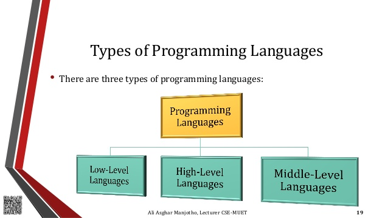

<
Programming Languages
types of programming languages

Nowadays, there are numerous programming languages are becoming more general and all-purpose, but these languages have their specialties, and each language has its own advantages and disadvantages. Usually, programming languages can be classified into a few types, however, these languages support multiple programming style. Every year there are a number of programming languages are implemented, but few languages are becoming very popular which may used by a professional programmer in their career.
Programming languages are used to control the performance of the computer or machine. At present, computer programmer has many choices to choose the language, but there are many differences between programming languages. So, this article gives a brief information regarding what are the different types of programming languages, differences between programming languages and types of programming languages in useful ways A programming language is a notation designed to connect instructions to a machine or a computer. Programming languages are mainly used to control the performance of a machine or to express algorithms. At present, thousand programming languages have been implemented. In the computer field, many languages need to be stated in an imperative form, while other programming languages utilize declarative form. The program can be divided into two forms such as syntax and semantics. Some languages are defined by an SO standard like C language Procedural Programming Language
The procedural programming language is used to execute a sequence of statements which lead to a result. Typically, this type of programming language uses multiple variables, heavy loops and other elements, which separates them from functional programming languages. Functions of procedural language may control variables, other than function’s value returns. For example, printing out information Functional Programming Language
Functional programming language typically uses stored data, frequently avoiding loops in favor of recursive functions.The functional programing’s primary focus is on the return values of functions, and side effects and different suggests that storing state are powerfully discouraged. For example, in an exceedingly pure useful language, if a function is termed, it’s expected that the function not modify or perform any o/p. It may, however, build algorithmic calls and alter the parameters of these calls. Functional languages are usually easier and build it easier to figure on abstract issues, however they will even be further from the machine therein their programming model makes it difficult to know precisely, but the code is decoded into machine language (which are often problematic for system programming)Object-oriented Programming Language
This programming language views the world as a group of objects that have internal data and external accessing parts of that data. The aim this programming language is to think about the fault by separating it into a collection of objects that offer services which can be used to solve a specific problem. One of the main principle of object oriented programming language is encapsulation that everything an object will need must be inside of the object. This language also emphasizes reusability through inheritance and the capacity to spread current implementations without having to change a great deal of code by using polymorphism.